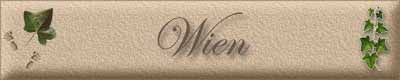

|
||
|
Burgtheater
Grinzing Heuriger
Riesenrad im Prater
UN-City am Donaupark
Hofburg
Stephansdom und Karlskirche
Staatsoper
kunsthist. Museum
…Während am Vormittag die Schwerenschleifer, Kesselflicker, Rastelbinder, Bandelkramer, Lumpensammlerinnen ihre Dienste feilboten und die Hausbewohner mehr oder weniger gleichgültig ließen, von manchen sogar als lästig empfunden wurden, - beim WERKERLMANN war es anders, der wurde erwartet.! Das Wiener Volk ist bis in die untersten Schichten von unstillbarem Verlangen nach Musik erfüllt. Musik ist ihm die Würze des Lebens, ja man kann sagen Herzensbedürfnis! Und der Werkelmann (Dreh-Orgelmann) kam diesem Bedürfnis entgegen.
Auszug aus Altwiener Vorstadthaus und der Werkelmann“ von Bruno Reiffenstein, Wien
|

1. Hauptstadt von Österreich und österreichisches Bundesland, an der Donau, mit 23 Bezirken, 415 km2, im Stadtkern 170 m ü. M., 1,48 Mill. Ew. (1988). Sitz der Bundesregierung, der Landesregierungen von W. u. Niederösterreich u. zahlreicher internationaler Organisationen (z. B. OPEC, UN-Behörden) sowie eines kath. Erzbischofs, eines ev. Bischofs u. eines griechisch-orthodoxen Metropoliten. Wien ist ein mitteleuropäischen Kulturzentrum mit Universität (gegr. 1365) u. zahlreichen weiteren Hochschulen, Sammlungen u. Archiven (u. a. Kunsthistorische Museen, graphische Sammlung Albertina, Österreichische Galerie, Museum des 20. Jahrhunderts, Völkerkundemuseum, Natur- historisches und Technisches Museum), Nationalbibliothek, Akademie der Wissenschaften. Wien ist führende Theaterstadt (Burgtheater, Staatsoper). Wahrzeichen Wiens ist der romanisch-gotische Stephandom (13.-16. Jh.) im Stadtkern. Die meisten bedeutenden Bauten stammen aus dem Barock: zahlreiche Kirchen (Karls-, Peters-, Jesuitenkirche) u. Adelspalais, wie die Anlagen für Prinz Eugen l (Winterpalais u. Belvedereschlösser), Palais Starhemberg, Liechtenstein, Gardepalais u. Schönbrunn. Die Hofburg besteht aus verschiedenen Bauteilen, die barocken sind die bedeutendsten (Hofbibliothek u. Winterreitschule von Fischer von Erlach). Wien erwuchs auf Terrassen am Abhang des Wienerwalds, der bogenförmig das rechte Donauufer säumt ("Muschellage"), u. griff im Lauf der Zeit durch Eingemeindungen (Floridsdorf) auf das linke, flache Donauufer über. Die Lage am Schnittpunkt der Bernsteinstraße (N-S) mit der Donaustraße (W-O) sowie die Stellung als Residenz sind wesentlich für den Aufstieg Wiens. Die Altstadt ist zentral gelegen, mit Citycharakter, umschlossen von der Ringstraße, die nach 1858 anstelle der Stadtmauern angelegt wurde; es schließen sich die Vorstädte (Josefstadt, Wieden) bis zur Gürtelstraße an (an der Stelle des "Linienwalls"); weiter gegen W folgen Vororte, z. T. ehemalige Dörfer (Grinzing), die von der sich ausbreitenden Siedlung erreicht wurden. Geschichte: Seit etwa 500 v. Chr. siedelten Kelten in der Gegend des heutigen Wiens. Aus dem Namen der keltischen Siedlung
Vedunja ("Waldbach") leitet sich die heutige Namensform ab. Daneben wurde um 70 n. Chr. die römische Lagerstadt Vin
dobona gegründet, die der Abwehr der germanischen Markomannen diente. Aus ihr entwickelte sich das mittelalterliche Wien; 881 als Wenia erwähnt. Karl d. Große zerstörte das seit dem 6. Jh. dort entstandene Awarenreich u. gründete die Ostmark, im die 907 dem Ansturm der Ungarn erlag. Nach 0ttos I. Sieg auf dem Lechfeld verlieh Otto II. die von Markgrafschaft 976 an seinen Anhänger Leopold I. von Babenberg, dessen Nachfolger, seit 1156) Herzöge, ihre Residenz vom Leopoldsberg nach Wien verlegten. Leopold IV., Erbauer einer Burg am Platz der heutigen Hofburg, verlieh 1221 das Stadtrecht. Die Kreuzzüge begünstigten die Entwicklung bis zur vorübergehenden Reichsunmittelbarkeit 1237. Ottokar II. von Böhmen gab Wien 1274 seine Befestigungen, die bis 1857 erhalten blieben. Nach dem Sieg Rudolfs von Habsburg über den Böhmenkönig 1276 wurde Wien Residenz der Habsburger. Herzog Rudolf IV. gründete 1365 die Universität u. ließ den Stephansdom ausbauen. 1469 wurde Wien zum Bistum erhoben. 1485-1490 war es vom Ungarnkönig Matthias Corvinus besetzt. Unter dem kaiserlichen Feldhauptmann Graf Niklas Salm widerstand es 1529 dem Angriff der Türken unter Suleiman II. Im Dreißigjährigen Krieg wurde Wien. 1619 von böhmischen Protestanten unter Graf Matthias Thurn u. 1645 vom Schwedengeneral Torstenson belagert. 1683 verteidigte Graf Ernst Rüdiger von Starhemberg die Stadt gegen das Türkenheer Mehmeds IV. unter Kara Mustafa bis zur Befreiung durch kaiserliche und polnische Truppen. Unter der Regierung Karls VI. u. der Kaiserin Maria Theresia wurde Wien. gesellschaftlich und politisch Mittelpunkt der Monarchie; im 18. u. 19.Jh. entfalteten sich Kunst u. Kultur zu glanzvoller Höhe, hier wirkten Gluck, Haydn, Mozart, Beethoven, Schubert, Johann Strauß, Josef Strauß, Bruckner, Brahms. 1804 wurde Wien Hauptstadt des Kaiserreichs Österreich, 1805/06 von Franzosen besetzt. Der Wiener Kongress 1814/15 bestimmte die Gestaltung des neuen Europa nach dem Sturz Napoleons. Politische Reaktion und blutige Aufstände 1848 endeten mit dem Sturz Metternichs. Unter Kaiser Franz Joseph I. erhielt Wien das Recht auf Selbstverwaltung. 1922 wurde Wien Bundesland; 1939-1945 war es das "Reichsgau"; 1945-1955 stand es unter Viermächteverwaltung.
|
|